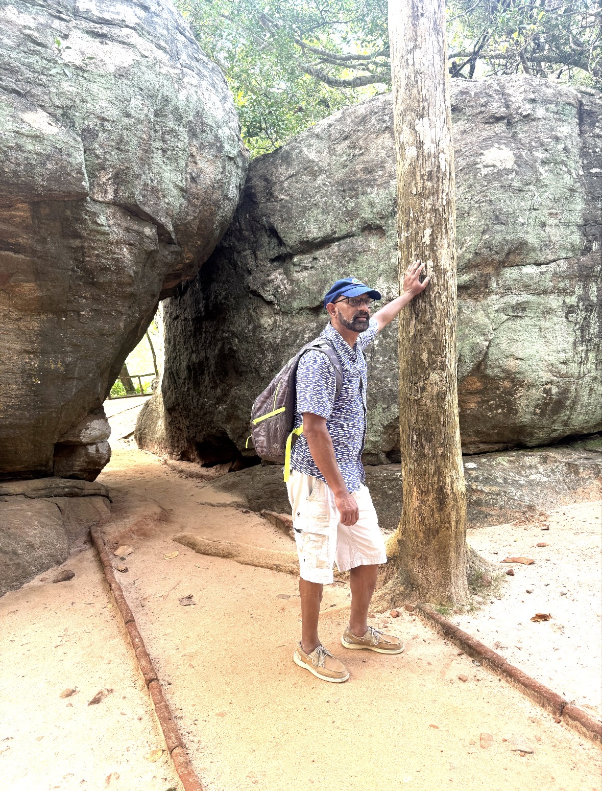
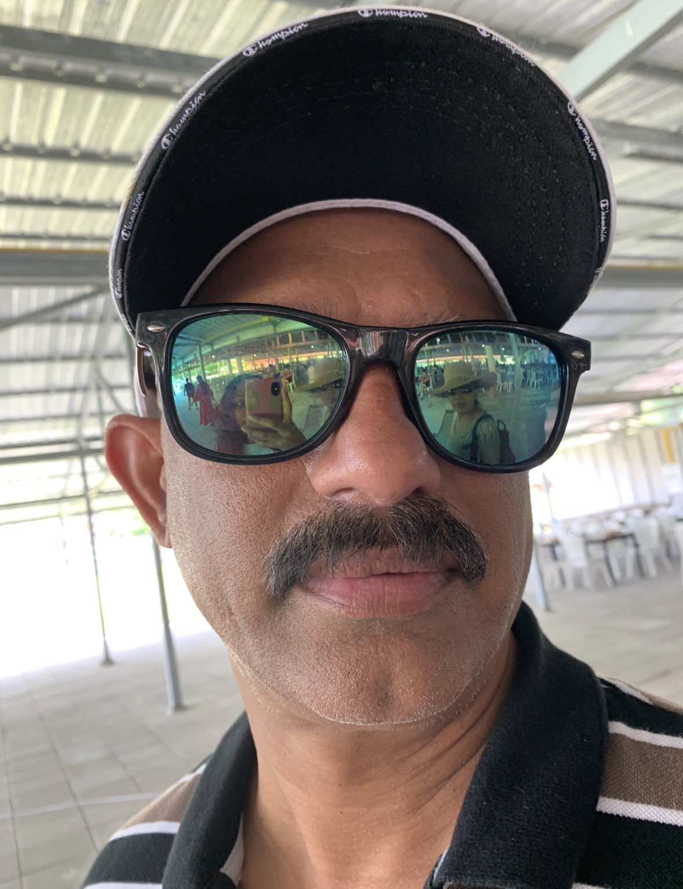
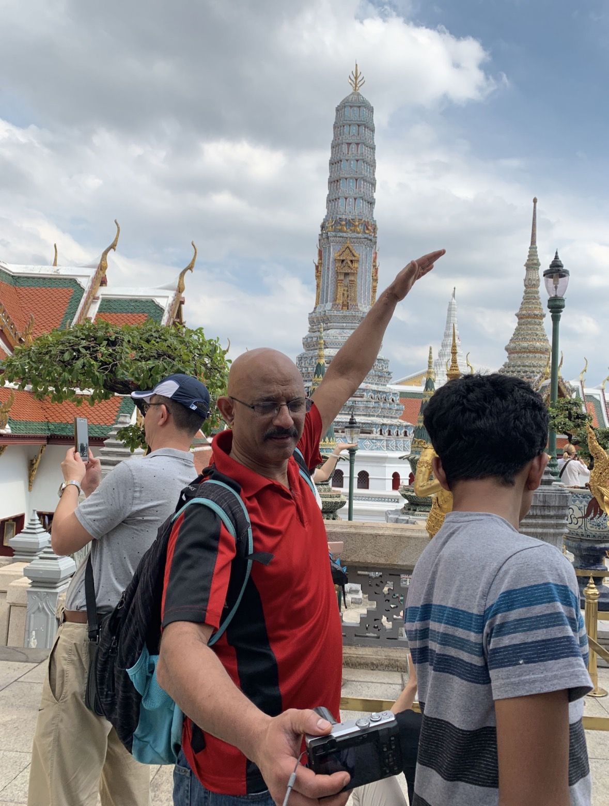
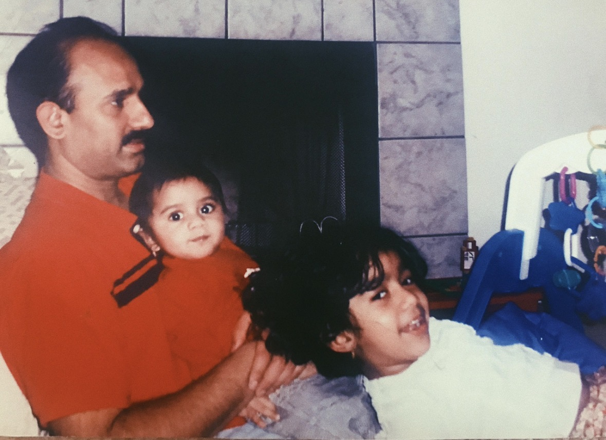

The Origin Story of Professor Utonium
Not Everything Is a Leadership Lesson, Kyle
I love the Powerpuff Girls. Anyone who knows me or even just looks at my digital footprint can tell. Especially Buttercup. She is my emblem for everything. Everyone always asks me why, and I always say I don't know, I just do.
That's a lie. I do know. I just don't usually share the real reason because 1. It makes me look like a sap, and 2. Honestly, I get choked up talking about my dad because I love him so much it hurts me. So, if you are wondering about my LinkedIn banner, and why I have something so unprofessional up there it’s because of this.
Daddy’s girl
The common take is that The Powerpuff Girls taught a generation of young girls that they can save the world. That's true but it's not why I love the show. It’s really about a dad who let them. Also, this is a dumb take. Obviously girls can save the world.
Sugar, spice, and everything nice. That was Professor Utonium's formula for the perfect little girl. But Chemical X happened and what he got was something he never planned for. He loved them anyway.
And then he let his kindergartners fight monsters.
That part gets overlooked. The Professor creates something he can't predict and never tries to control it. Buttercup is too rough, too loud, too much, and the show never asks her to soften. The Professor doesn't love her less for being difficult. He just loves her.
My dad had his own version of the formula. Be kind. Work hard. Put your best foot forward. He had a recipe for success and he knew it worked because he lived it, and thought that passing it down would lead to the perfect daughter with the perfect life. I also heard you need to save money an equal amount. Immigrants love saving money, which I understand, but I have a shopping addiction so it's a work in progress.
the greatest man who ever lived
Life has not been easy on my dad. When he and my mother moved to Michigan, some guy hit him with a boat while he was on a jet ski and shattered his entire leg. Left him in the middle of Lake Michigan. Thank God there are no sharks. By some miracle, one of the best orthopedic surgeons in the world happened to be rotating through Grand Rapids at the time. Doctors said without him, my dad would be an amputee. I thank God for that surgeon. But they told my dad he wouldn't walk for a year. He walked in six months. Fun Fact: Lake Michigan's tagline is caribbean blue waters, no sharks, no salt.
That's just who he is. But that’s not all, he has been through so many other things that could have broken a person, things I can't put into words here. He could be bitter. No one would blame him. But he never let any of it define him. He stayed kind, resilient, and himself.
People don't just respect him. They revere him. He is the strongest person I know. Period.
Probably the strongest person most other people that know him know too.




NSFW (not safe for Whatsapp)
It's honestly really interesting that my dad raised me the way he did.
He comes from a patriarchal Telugu family in the most traditional sense. Women are quiet. Men are the authority. That's the mold, and most of the men in his family fit it perfectly.
I am the complete opposite of the women who he grew up around. I was a troublemaker, I’m stubborn, and I have a pretty big mouth on me. It took a long time to get along with my grandparents because they didn't like how I am. And my dad, who grew up in that world and deeply respects his family, still understood me. He never tried to change me. In fact, he defended me, and if you know anything about Indian families, that's a HUGE deal.
He came from a world that would have told me to sit down. He never once did. It probably helps that he married my mother, who is the strongest and most intelligent woman I have ever met. I could write pages about her, but this is about my dad.
I don't know. All this to say, I love the Powerpuff Girls because I see myself in Buttercup, and I have a really great dad that just let me be me.
Thank you for everything, Daddy. I am so lucky that you are my Professor Utonium.
